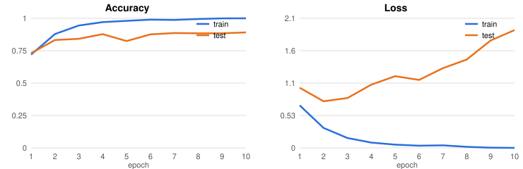
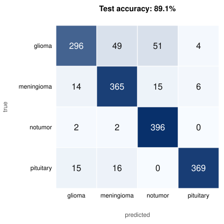

Explainable medical imaging
Brain tumor MRI classification you can see inside
A compact convolutional network sorts brain MRI slices into glioma, meningioma, pituitary tumor or no tumor. Grad-CAM heatmaps then show which part of each scan drove the decision, so a reviewer can check whether the model is looking at the lesion or at something irrelevant.
Training and evaluation


Per-class results
| Class | Test images | Correct | Recall |
|---|
Grad-CAM: where the model looked
Randomly chosen test scans, three per class. Red/yellow areas pushed the model toward its prediction most strongly.
How it works
- Images resized to 224×224 and scaled to [0, 1].
- Three Conv2D + MaxPooling blocks (32, 64, 64 filters) → Dense(64) → 4 logits, trained with Adam and cross-entropy.
- Grad-CAM: gradients of the predicted class score with respect to the last conv layer are averaged per channel and used to weight that layer's feature maps, giving a coarse localization heatmap.
Limitations
- Small CNN trained from scratch with no augmentation; transfer learning would likely do better.
- The test set doubles as validation data during training, so the reported accuracy is slightly optimistic.
- Grad-CAM at a 26×26 feature map is coarse and shows correlation, not proof of medical reasoning.